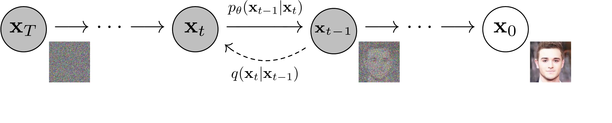

🎮 费曼一分钟（通俗速读）
想象一个「倒放」游戏：先把一张清晰照片一帧帧泼上雪花噪点，直到变成满屏的电视雪花；DDPM 要训练 AI 学会把这个过程倒着放——从纯雪花开始，一步步擦掉噪点，最后还原出一张全新的、以前没见过的照片。
用《我的世界》打比方：正向过程像让 TNT 把一座建筑逐格炸成碎块（规则固定、不用学）；反向过程才是真本事——AI 看着一堆碎块，要猜出「上一秒少炸了哪一块」，逐格还原回完整建筑。把「凭空造图」这个难题，拆成了「许多步各自简单的去噪」。
三个核心概念：① 前向加噪——按固定方差表逐步加高斯噪声，还能一步算到任意时刻 $x_t$；② 反向去噪——一条可学习的马尔可夫链，每步去掉一点噪声；③ 噪声预测（本文关键招）——不让网络直接画图，而是预测「这一步混进了多少噪声 $\epsilon$」，损失就退化成简单的 MSE，训练又稳又好。
Abstract
We present high quality image synthesis results using diffusion probabilistic models, a class of latent variable models inspired by considerations from nonequilibrium thermodynamics. Our best results are obtained by training on a weighted variational bound designed according to a novel connection between diffusion probabilistic models and denoising score matching with Langevin dynamics, and our models naturally admit a progressive lossy decompression scheme that can be interpreted as a generalization of autoregressive decoding. On the unconditional CIFAR10 dataset, we obtain an Inception score of 9.46 and a state-of-the-art FID score of 3.17. On 256×256 LSUN, we obtain sample quality similar to ProgressiveGAN.
我们利用扩散概率模型（diffusion probabilistic models）取得了高质量的图像合成结果。它是一类受非平衡热力学启发的潜变量模型。我们的最佳结果通过在一个加权变分下界（weighted variational bound）上训练获得，该下界依据扩散概率模型与「去噪分数匹配 + Langevin 动力学」之间一种新颖的联系而设计；并且我们的模型天然支持一种渐进式有损解压方案，可被解释为自回归解码的推广。在无条件 CIFAR10 数据集上，我们取得了 9.46 的 Inception 分数与当时最优的 3.17 FID 分数。在 256×256 的 LSUN 上，我们获得了与 ProgressiveGAN 相近的样本质量。
段落功能
用一句话宣告全文贡献：扩散模型可以高质量生成图像，并预告方法与结果。
逻辑角色
论证链起点——将「扩散模型能否实用」这一隐含问题，直接以肯定结论回应，为后文铺垫。
论证技巧 / 潜在漏洞
技巧：摘要同时抛出理论连接（score matching）、工程收益（渐进解码）和硬指标（IS/FID），三重锚定可信度。漏洞：未说明与当时最强 GAN 的公平对比条件（训练集 FID vs 测试集 FID 差异留到 §4 才交代）。
1. Introduction
Deep generative models of all kinds have recently exhibited high quality samples in a wide variety of data modalities. Generative adversarial networks (GANs), autoregressive models, flows, and variational autoencoders (VAEs) have synthesized striking image and audio samples, and there have been remarkable advances in energy-based modeling and score matching that have produced images comparable to those of GANs.
近来各类深度生成模型已在多种数据模态上展现出高质量样本。生成对抗网络（GAN）、自回归模型、流模型与变分自编码器（VAE）已合成出惊艳的图像与音频样本；同时，基于能量的建模与分数匹配也取得了显著进展，生成的图像质量可与 GAN 相媲美。
段落功能
建立研究领域背景，说明生成模型赛道已非常拥挤且成绩斐然。
逻辑角色
「问题语境」——读者会问：既然 GAN/自回归等已很强，为何还要研究扩散模型？
论证技巧 / 潜在漏洞
技巧：列举多类 SOTA 方法，暗示新范式必须证明自己有存在价值。无实质漏洞，标准文献综述开场。
This paper presents progress in diffusion probabilistic models. A diffusion probabilistic model is a parameterized Markov chain trained using variational inference to produce samples matching the data after finite time. Transitions of this chain are learned to reverse a diffusion process, which is a Markov chain that gradually adds noise to the data in the opposite direction of sampling until signal is destroyed. When the diffusion consists of small amounts of Gaussian noise, it is sufficient to set the sampling chain transitions to conditional Gaussians too, allowing for a particularly simple neural network parameterization.
本文推进了扩散概率模型的研究。扩散概率模型是一条用变分推断训练的参数化马尔可夫链，能在有限步后生成与数据匹配的样本。该链的转移被训练用于「逆转」一个扩散过程——扩散过程本身是一条马尔可夫链，沿与采样相反的方向逐步向数据加入噪声，直至信号被破坏殆尽。当扩散每步只加入少量高斯噪声时，将采样链的转移也设为条件高斯分布便已足够，这使得神经网络的参数化格外简单。
段落功能
给出扩散模型的操作性定义：正向加噪 + 反向去噪的马尔可夫链 + 变分推断训练。
逻辑角色
从背景过渡到本文技术对象，为后文数学形式化铺路。
论证技巧 / 潜在漏洞
技巧：用「热力学启发」与「高斯条件」降低陌生感。漏洞：「小噪声足够用高斯」是直觉性断言，严格性留到 §2 Background。
Diffusion models are straightforward to define and efficient to train, but to the best of our knowledge, there has been no demonstration that they are capable of generating high quality samples. We show that diffusion models actually are capable of generating high quality samples, sometimes better than the published results on other types of generative models. In addition, we show that a certain parameterization of diffusion models reveals an equivalence with denoising score matching over multiple noise levels during training and with annealed Langevin dynamics during sampling. We obtained our best sample quality results using this parameterization, so we consider this equivalence to be one of our primary contributions.
扩散模型易于定义、训练高效，但据我们所知，此前尚无工作证明它们能够生成高质量样本。我们证明扩散模型确实能生成高质量样本，有时甚至优于其他类型生成模型已发表的结果。此外，我们表明扩散模型的某种特定参数化，揭示了它在训练时与「多噪声层级上的去噪分数匹配」、在采样时与「退火 Langevin 动力学」之间的等价关系。我们正是用这种参数化取得了最佳样本质量，因此将这一等价关系视为本文的主要贡献之一。
段落功能
明确指出研究空白（尚无高质量样本实证），并宣告本文将填补该空白。
逻辑角色
全文核心论点首次完整陈述：扩散模型不仅可行，且可超越其他生成模型；理论等价性是第二贡献。
论证技巧 / 潜在漏洞
技巧：「to the best of our knowledge」限定措辞，避免绝对化。漏洞：「sometimes better」较模糊，具体边界依赖实验节指标选取（IS/FID vs NLL，见 §4 Table 1）。
Despite their sample quality, our models do not have competitive log likelihoods compared to other likelihood-based models (our models do, however, have log likelihoods better than the large estimates annealed importance sampling has been reported to produce for energy based models and score matching). We find that the majority of our models' lossless codelengths are consumed to describe imperceptible image details. We present a more refined analysis of this phenomenon in the language of lossy compression, and we show that the sampling procedure of diffusion models is a type of progressive decoding that resembles autoregressive decoding along a bit ordering that vastly generalizes what is normally possible with autoregressive models.
尽管样本质量出色，我们的模型在对数似然上却不及其他基于似然的模型（不过，我们模型的对数似然仍优于此前用退火重要性采样为能量模型和分数匹配所报告的那些偏大估计值）。我们发现，模型的无损码长大部分被用来描述人眼无法察觉的图像细节。我们用有损压缩的语言对这一现象给出更精细的分析，并表明扩散模型的采样过程是一种渐进式解码——它类似于沿某种比特顺序进行的自回归解码，而这种顺序远比自回归模型通常所能实现的更为一般化。
段落功能
主动承认 NLL 劣势，并将此「缺陷」重新框架为 rate-distortion / 渐进解码的理论洞察。
逻辑角色
预判审稿人攻击点（似然不够好），用概念重构化解矛盾，强化「样本质量 vs 码长」双轨叙事。
论证技巧 / 潜在漏洞
技巧：经典 rhetorical move——承认弱点后立即提供替代评价维度。漏洞：将「不可感知细节」等同于浪费码长，缺乏人眼感知实验的严格证明，更多是解释性叙事。
2. Background
Diffusion models are latent variable models of the form $p_\theta(x_0) := \int p_\theta(x_{0:T})\,dx_{1:T}$, where $x_1,\dots,x_T$ are latents of the same dimensionality as the data $x_0 \sim q(x_0)$. The joint distribution $p_\theta(x_{0:T})$ is called the reverse process, and it is defined as a Markov chain with learned Gaussian transitions starting at $p(x_T) = \mathcal{N}(x_T; \mathbf{0}, \mathbf{I})$.
What distinguishes diffusion models is that the approximate posterior $q(x_{1:T}\mid x_0)$, called the forward process or diffusion process, is fixed to a Markov chain that gradually adds Gaussian noise according to a variance schedule $\beta_1,\dots,\beta_T$.
扩散模型是形如 $p_\theta(x_0) := \int p_\theta(x_{0:T})\,dx_{1:T}$ 的潜变量模型，其中 $x_1,\dots,x_T$ 是与数据 $x_0 \sim q(x_0)$ 同维度的潜变量。联合分布 $p_\theta(x_{0:T})$ 称为「反向过程」，它被定义为一条具有可学习高斯转移、起始于 $p(x_T) = \mathcal{N}(x_T; \mathbf{0}, \mathbf{I})$ 的马尔可夫链。
扩散模型的独特之处在于：其近似后验 $q(x_{1:T}\mid x_0)$（称为「正向过程」或扩散过程）被固定为一条马尔可夫链，按方差调度 $\beta_1,\dots,\beta_T$ 逐步加入高斯噪声。
段落功能
用概率图模型语言严格定义正向/反向过程，建立全文数学符号体系（见底部符号表）。
逻辑角色
为变分下界推导和后续 $\epsilon$-参数化提供形式基础；属于「论据基础设施」。
论证技巧 / 潜在漏洞
技巧：强调 $q$ 固定、只有 $p_\theta$ 可学习——与 VAE 的可学习后验形成对比（Related Work 再展开）。无重大漏洞。
Training is performed by optimizing the usual variational bound on negative log likelihood. A notable property of the forward process is that it admits sampling $x_t$ at an arbitrary timestep $t$ in closed form: using $\alpha_t := 1-\beta_t$ and $\bar\alpha_t := \prod_{s=1}^{t}\alpha_s$, we have $q(x_t\mid x_0) = \mathcal{N}(x_t; \sqrt{\bar\alpha_t}\,x_0, (1-\bar\alpha_t)\mathbf{I})$. Efficient training is therefore possible by optimizing random terms of $L$ with stochastic gradient descent. Further improvements come from variance reduction by rewriting $L$ as a sum of KL divergences between tractable Gaussian posteriors.
训练通过优化常见的「负对数似然变分下界」来完成。正向过程的一个重要性质是：它允许以闭式形式在任意时间步 $t$ 直接采样 $x_t$——记 $\alpha_t := 1-\beta_t$、$\bar\alpha_t := \prod_{s=1}^{t}\alpha_s$，则 $q(x_t\mid x_0) = \mathcal{N}(x_t; \sqrt{\bar\alpha_t}\,x_0, (1-\bar\alpha_t)\mathbf{I})$。因此可以用随机梯度下降优化 $L$ 的随机项，从而实现高效训练。进一步的改进来自方差缩减——将 $L$ 改写为若干可解析的高斯后验之间的 KL 散度之和。
段落功能
说明训练目标来源（ELBO）及关键工程性质：任意 $t$ 闭式采样、KL 可解析计算。
逻辑角色
连接「理论模型」与「可训练算法」，为 §3 的参数化选择论证「为何这样设计」。
论证技巧 / 潜在漏洞
技巧：突出 closed-form 是相比一般 latent model 的计算优势。漏洞：未讨论 $T$ 很大时的训练方差与计算成本（实验节设 $T=1000$）。
3. Diffusion Models and Denoising Autoencoders
原文 Figure 2：本文采用的有向图模型

方法数据流：训练 vs 采样（自绘流程图）
flowchart LR
subgraph TRAIN[训练阶段 Algorithm 1]
direction LR
x0["x0 ~ q(x0)
真实图像"] --> addn["闭式加噪
xt = √at·x0 + √(1−at)·eps"]
tt["t ~ Uniform(1..T)"] --> addn
eps["eps ~ N(0, I)"] --> addn
addn --> net["eps_theta(xt, t)
U-Net"]
eps --> loss["L_simple = ‖eps − eps_theta‖²
梯度下降"]
net --> loss
end
subgraph SAMPLE[采样阶段 Algorithm 2]
direction LR
xT["xT ~ N(0, I)"] --> step["xt-1 = 1/√at·(xt − (1−at)/√(1−at_bar)·eps_theta(xt,t)) + sigma·z
t = T → 1"]
step --> step
step --> out["x0 生成图像"]
end
We establish a new explicit connection between diffusion models and denoising score matching that leads to a simplified, weighted variational bound objective. We propose predicting the noise $\epsilon$ rather than the posterior mean $\tilde\mu$, motivated by the analysis of $L_t$. With fixed isotropic variance $\sigma_t^2 \mathbf{I}$, the reverse mean can be expressed in terms of $\epsilon$, linking training to multi-scale denoising.
我们在扩散模型与「去噪分数匹配」之间建立了一种新的显式联系，由此导出一个简化的加权变分下界目标。受对 $L_t$ 的分析启发，我们提出预测噪声 $\epsilon$，而非预测后验均值 $\tilde\mu$。在采用固定的各向同性方差 $\sigma_t^2 \mathbf{I}$ 时，反向过程的均值可以用 $\epsilon$ 表示，从而把训练与多尺度去噪联系起来。
方法动机
背景节已把 ELBO 拆成逐项 KL（$L_T$、$L_{t-1}$、$L_0$）。最朴素的做法是让网络 $\mu_\theta$ 直接预测前向后验均值 $\tilde\mu_t$。本文的关键洞察（§3.2）：对 $L_{t-1}$ 做重参数化后，等价于让网络预测「当初加进去的噪声 $\epsilon$」，这把目标变成了多噪声尺度上的去噪分数匹配。
公式拆解（$\epsilon$-参数化，式(11)）
采样均值改写为 $$\mu_\theta(x_t,t) = \frac{1}{\sqrt{\alpha_t}}\Big(x_t - \frac{\beta_t}{\sqrt{1-\bar\alpha_t}}\,\epsilon_\theta(x_t,t)\Big).$$
符号：$\alpha_t = 1-\beta_t$；$\bar\alpha_t = \prod_{s=1}^{t}\alpha_s$（累积保留比例）；$\epsilon_\theta$ 是预测噪声的 U-Net；$\sigma_t^2$ 取 $\beta_t$ 或 $\tilde\beta_t$（固定不学习）。网络输入 $x_t$ 与时间步 $t$，输出与图像同维的噪声估计。
设计取舍
三种可选参数化：预测 $\tilde\mu$（基线）、预测 $x_0$（早期实验样本差，弃用）、预测 $\epsilon$（本文）。$\epsilon$-预测让损失退化为简洁的 MSE，且与 NCSN 的去噪分数匹配 + 退火 Langevin 采样在形式上统一。
论证技巧 / 潜在漏洞
技巧：设计选择锚定在 $L_{t-1}$ 的代数变形，而非纯工程试错，理论说服力强。漏洞：等价性依赖「$\sigma_t$ 固定、$\beta_t$ 很小」等设定；$\epsilon$-预测优越性最终仍靠消融（§4 Table 2）兜底，而非纯理论证明。
We found it beneficial to sample quality to train on the following variant of the variational bound: $L_\text{simple}(\theta) := \mathbb{E}_{t,x_0,\epsilon}\big[\lVert \epsilon - \epsilon_\theta(\sqrt{\bar\alpha_t}\,x_0 + \sqrt{1-\bar\alpha_t}\,\epsilon,\, t)\rVert^2\big]$, where $t$ is uniform between $1$ and $T$. Since our simplified objective discards the weighting in the true bound, it is a weighted variational bound that emphasizes different aspects of reconstruction. Our diffusion process setup causes the simplified objective to down-weight loss terms corresponding to small $t$, so the network can focus on more difficult denoising tasks at larger $t$.
我们发现，在以下变分下界的变体上训练有利于样本质量：$L_\text{simple}(\theta) := \mathbb{E}_{t,x_0,\epsilon}\big[\lVert \epsilon - \epsilon_\theta(\sqrt{\bar\alpha_t}\,x_0 + \sqrt{1-\bar\alpha_t}\,\epsilon,\, t)\rVert^2\big]$，其中 $t$ 在 $1$ 到 $T$ 之间均匀采样。由于该简化目标丢弃了真实下界中的权重，它实际上是一个加权变分下界，强调重建的不同方面。我们的扩散过程设置使该简化目标对应小 $t$ 的损失项被降权，从而让网络能专注于更大 $t$ 时更困难的去噪任务。
Loss 公式与各项含义（式(14)）
$$L_\text{simple}(\theta) = \mathbb{E}_{t,x_0,\epsilon}\Big[\big\lVert \epsilon - \epsilon_\theta(\sqrt{\bar\alpha_t}\,x_0 + \sqrt{1-\bar\alpha_t}\,\epsilon,\, t)\big\rVert^2\Big].$$
即：对真实图像 $x_0$ 按时间步 $t$ 闭式加噪得到 $x_t$，让网络回归当初加入的标准高斯噪声 $\epsilon$，取 L2。$t$ 在 $1..T$ 均匀采样。
与完整 ELBO 的关系
$L_\text{simple}$ 丢弃了严格变分下界中每项的权重 $\dfrac{\beta_t^2}{2\sigma_t^2 \alpha_t (1-\bar\alpha_t)}$，等价于「对小 $t$（噪声小、任务易）降权」。$t=1$ 项对应离散解码器 $L_0$，$t>1$ 项对应去噪分数匹配的无权重版。
论证技巧 / 潜在漏洞
技巧：承认 $L_\text{simple}$ 非严格 ELBO，却赋予其「课程学习」式直觉（聚焦大 $t$ 难样本）。漏洞：降权方案缺乏理论最优性证明，纯靠实证 IS/FID 提升支撑（见 §4 消融）。
4. Experiments
We set $T = 1000$ for all experiments. We set the forward process variances to constants increasing linearly from $\beta_1 = 10^{-4}$ to $\beta_T = 0.02$. To represent the reverse process, we use a U-Net backbone similar to an unmasked PixelCNN++ with group normalization. Parameters are shared across time, specified using Transformer sinusoidal position embedding. We use self-attention at the 16×16 feature map resolution.
所有实验中我们设 $T = 1000$。正向过程的方差设为从 $\beta_1 = 10^{-4}$ 线性增至 $\beta_T = 0.02$ 的常数。为表示反向过程，我们使用类似于无掩码 PixelCNN++ 的 U-Net 主干，并在全网采用组归一化（group normalization）。参数在各时间步间共享，时间步通过 Transformer 正弦位置编码输入网络。我们在 16×16 的特征图分辨率上使用自注意力。
- 数据集与划分：CIFAR10（无条件，32×32；标准 50k 训练 / 10k 测试）；CelebA-HQ 256²；LSUN Bedroom / Cat / Church 256²。生成建模沿用各数据集原始划分，无单独验证集——以训练过程中最小 FID 处报告指标（§4）。
- 预处理：像素整数 $\{0,\dots,255\}$ 线性缩放到 $[-1, 1]$；训练用随机水平翻转（附录 B）。
- 训练 Loss：$L_\text{simple} = \mathbb{E}[\lVert \epsilon - \epsilon_\theta(x_t, t)\rVert^2]$（式(14)，见方法节）。
- 训练策略：Adam，lr $2\times10^{-4}$（256² 降至 $2\times10^{-5}$）；batch 128（CIFAR10）/ 64（大图）；EMA 衰减 0.9999（未 sweep，附录 B）；CIFAR10 dropout 0.1；$T=1000$，$\beta$ 线性 $10^{-4}\to0.02$。
- 架构：PixelCNN++ 风格 U-Net（Wide ResNet），group norm，16×16 自注意力，正弦时间嵌入（附录 B）。
- 算力（§E）：TPU v3-8（≈8×V100）。CIFAR10 batch 128 时 21 步/秒，至 800k 步约 10.6 小时；采样 256 张约 17 秒。其余数据集训练步数论文未逐一列出。
- 评测：IS↑、FID↓ 均在 50000 个样本上计算；NLL↓ 以 bits/dim 计（Table 1）。
- 论点↔证据映射：本节超参直接服务于 Intro 主张「高质量 + 训练高效」；其有效性由 Table 1（绝对指标）与 Table 2（消融）共同支撑。
- 统计严谨性：IS 报告 split 标准差（如 $9.46\pm0.11$，Table 1）；FID 为单值、无多次训练运行的方差，差异显著性未做统计检验。
论证技巧 / 潜在漏洞
技巧：$T=1000$ 与先前工作对齐、超参基本不 sweep，弱化「调参取胜」质疑。漏洞：架构借鉴 PixelCNN++/U-Net，未完全隔离「架构红利」与「扩散框架红利」；无独立验证集，按最小 FID 选点略有「在测试指标上挑最优」之嫌（属生成建模惯例）。
On CIFAR10, with our FID score of 3.17, our unconditional model achieves better sample quality than most models in the literature, including class conditional models. Our Inception score is 9.46 ± 0.11. We find that training on the true variational bound yields better codelengths than training on the simplified objective, as expected, but the latter yields the best sample quality.
在 CIFAR10 上，我们的无条件模型取得 3.17 的 FID 分数，样本质量优于文献中大多数模型，甚至包括类别条件模型。我们的 Inception 分数为 9.46 ± 0.11。我们发现，在真实变分下界上训练能获得比简化目标更好的码长（如预期所料），但后者却带来最佳的样本质量。
CIFAR10 无条件生成（Table 1；指标方向：IS↑、FID↓、NLL↓ bits/dim）：
| 模型 | IS↑ | FID↓ | NLL↓ |
|---|---|---|---|
| Gated PixelCNN | 4.60 | 65.93 | 3.03 |
| NCSN | 8.87 ± 0.12 | 25.32 | — |
| SNGAN-DDLS | 9.09 ± 0.10 | 15.42 | — |
| StyleGAN2+ADA（无条件） | 9.74 ± 0.05 | 3.26 | — |
| 本文 ($L_\text{simple}$) | 9.46 ± 0.11 | 3.17 | ≤3.75 |
| 本文 ($L$, 固定各向同性 $\Sigma$) | 7.67 ± 0.13 | 13.51 | ≤3.70 |
LSUN 256² FID：Church 7.89、Bedroom 4.90（与 ProgressiveGAN 相近，Fig 3/4）。
解读（论点↔证据）
FID 3.17 优于绝大多数模型（含类别条件模型），甚至略胜无条件 StyleGAN2+ADA 的 3.26——直接支撑 Intro「有时优于已发表结果」主张。但出现张力：完整 $L$ 训练 NLL 更好（≤3.70）却样本差（FID 13.51）；$L_\text{simple}$ 样本最好却 NLL 略差——印证「码长 vs 样本质量」不一致。
统计严谨性 / 指标局限
IS 含 ±std，FID 为单次运行单值，未报多 seed 方差。FID/IS 依赖 ImageNet 预训练 Inception 特征，对样本数与实现敏感；本文 FID 相对训练集计算（测试集 FID=5.24，§4），跨论文对比须确认协议一致；与最强类别条件 StyleGAN2+ADA 的 2.67 仍有差距。
In ablation studies, we find that predicting $\tilde\mu$ works well only when trained on the true variational bound. Learning reverse process variances leads to unstable training and poorer sample quality. Predicting $\epsilon$ performs approximately as well as predicting $\tilde\mu$ under the true bound, but much better when trained with $L_\text{simple}$ (IS 9.46 / FID 3.17 vs. baselines).
在消融实验中，我们发现预测 $\tilde\mu$ 仅在用真实变分下界训练时才表现良好。学习反向过程的方差会导致训练不稳定、样本质量更差。预测 $\epsilon$ 在真实下界下与预测 $\tilde\mu$ 表现相当，但在用 $L_\text{simple}$ 训练时则明显更好（IS 9.46 / FID 3.17，优于各基线）。
CIFAR10 上「参数化 × 训练目标」消融（Table 2；—=训练不稳定/样本超出有效范围）：
| 参数化 / 目标 | IS↑ | FID↓ |
|---|---|---|
| $\tilde\mu$ 预测, $L$ 学习对角 $\Sigma$ | 7.28 ± 0.10 | 23.69 |
| $\tilde\mu$ 预测, $L$ 固定各向同性 $\Sigma$ | 8.06 ± 0.09 | 13.22 |
| $\tilde\mu$ 预测, $\lVert\tilde\mu-\tilde\mu_\theta\rVert^2$ | — | — |
| $\epsilon$ 预测, $L$ 学习对角 $\Sigma$ | — | — |
| $\epsilon$ 预测, $L$ 固定各向同性 $\Sigma$ | 7.67 ± 0.13 | 13.51 |
| $\epsilon$ 预测, $L_\text{simple}$（本文） | 9.46 ± 0.11 | 3.17 |
结论
三点：① 预测 $\tilde\mu$ 仅在真实变分下界下可用，配简化 MSE 则崩；② 学习反向方差导致训练不稳定、质量更差，故本文固定方差；③ $\epsilon$-预测在真实下界下与 $\tilde\mu$ 相当，但在 $L_\text{simple}$ 下大幅领先（FID 13.51→3.17）——即「$\epsilon$-预测 + $L_\text{simple}$」组合才是性能跃升关键，直接支撑 §3 的核心设计主张。
论证技巧 / 潜在漏洞
技巧：诚实报告失败配置（空白项），且消融正交地拆开「参数化」与「目标权重」两个变量。漏洞：消融仅在 CIFAR10 上做，LSUN/CelebA-HQ 结论主要靠定性样本图，跨数据集稳健性证据偏弱。
5. Conclusion
We have presented high quality image samples using diffusion models, and we have found connections among diffusion models and variational inference for training Markov chains, denoising score matching and annealed Langevin dynamics, autoregressive models, and progressive lossy compression. Since diffusion models seem to have excellent inductive biases for image data, we look forward to investigating their utility in other data modalities and as components in other types of generative models and machine learning systems.
我们展示了用扩散模型生成的高质量图像样本，并发现了扩散模型与多个方向之间的联系：用于训练马尔可夫链的变分推断、去噪分数匹配与退火 Langevin 动力学、自回归模型，以及渐进式有损压缩。由于扩散模型似乎对图像数据具有出色的归纳偏置，我们期待进一步探索它们在其他数据模态中的作用，以及作为其他类型生成模型和机器学习系统组件的潜力。
段落功能
收束全文贡献，并指向未来工作。
逻辑角色
论证链终点——将实验证据上升为领域级结论与研究方向。
论证技巧 / 潜在漏洞
技巧：结论重复多重连接（VI / score matching / 自回归 / 压缩），强化理论厚度。漏洞：「excellent inductive biases」偏断言，跨模态外推尚未验证。
符号速查表
| 符号 | 含义 |
|---|---|
| $x_0$ | 真实数据（图像），$x_0 \sim q(x_0)$ |
| $x_t$ | 第 $t$ 步加噪后的隐变量（与 $x_0$ 同维） |
| $x_T$ | 纯噪声，$p(x_T)=\mathcal{N}(0,\mathbf{I})$ |
| $q(x_t\mid x_{t-1})$ | 固定的正向加噪过程（扩散过程） |
| $p_\theta(x_{t-1}\mid x_t)$ | 可学习的反向去噪过程 |
| $\beta_t$ | 第 $t$ 步噪声方差调度（$10^{-4}\to0.02$ 线性） |
| $\alpha_t$ | $1-\beta_t$，单步信号保留比例 |
| $\bar\alpha_t$ | $\prod_{s=1}^{t}\alpha_s$，累积信号保留比例 |
| $\epsilon$ | 加噪时采样的标准高斯噪声 $\mathcal{N}(0,\mathbf{I})$ |
| $\epsilon_\theta(x_t,t)$ | 预测噪声的网络（U-Net），本文核心参数化 |
| $\tilde\mu_t$ | 正向后验均值（被 $\epsilon$-参数化替代的预测目标） |
| $\sigma_t^2$ | 反向过程方差，固定为 $\beta_t$ 或 $\tilde\beta_t$（不学习） |
| $L_\text{simple}$ | 简化加权目标 $\mathbb{E}[\lVert\epsilon-\epsilon_\theta\rVert^2]$ |
论证结构总览
核心主张（一句话）
通过将扩散模型参数化为噪声预测并采用简化加权目标训练，可以在保持训练简洁性的同时生成媲美甚至超越当时主流生成模型的图像样本，且该框架与多尺度去噪 score matching 在理论上等价。
来源：arXiv:2006.11239（指标见 §4 Table 1/2，超参见附录 B/E） · 生成工具：paper-logic-reading skill（三栏版）
🧩 结构化十问（AI 解构）
让 AI 当助教，从十个角度提取论文骨架。答案据论文与原文 LaTeX 源回答，未说明处标注「论文未说明」。
Q1 · 论文试图解决什么问题？
Q2 · 这是否是一个新问题？
Q3 · 要验证什么科学假设？
Q4 · 有哪些相关研究？如何归类？值得关注的研究者？
- 扩散 / 非平衡热力学：Sohl-Dickstein et al. 2015（开山之作）
- 分数匹配 + Langevin：Song & Ermon（NCSN / NCSNv2）
- 其他生成范式：GAN、VAE、自回归（PixelCNN++）、流模型、能量模型（EBM）
Q5 · 解决方案的关键是什么？
Q6 · 实验是如何设计的？
Q7 · 用什么数据集评估？代码开源吗？
Q8 · 实验结果是否很好支持了假设？
Q9 · 这篇论文到底有什么贡献？
Q10 · 下一步可以做什么？
🔬 深挖追问
第一性原理 · 本质
把「一步到位生成复杂图像分布」这个几乎不可解的难题，拆解为「许多步各自简单的高斯去噪」——以时间换难度，用一条马尔可夫链把单步的难映射，变成一长串可学习的小步。
第一性原理 · 哲学基础
「渐进可逆」对「一步生成」：热力学中「扩散 → 趋于平衡（无序）」的自发过程，被反向利用为「从纯无序中逐步重建有序」。核心信念是过程可逆、信息可被逐步注入与移除。
第一性原理 · 数学基础
变分推断与证据下界（ELBO）、马尔可夫链、高斯重参数化技巧、（去噪）分数匹配与 Langevin 动力学、以及把 ELBO 分解为可解析高斯后验间的 KL 散度。
批判性思维 · 我们还没问的根本问题（盲区）
- 采样效率：$T=1000$ 步、单图采样需秒级，论文未追问「能否大幅减步」——这是最大实用瓶颈（后续 DDIM/DPM-Solver 才回应）。
- 高斯假设的根本性：为何每步高斯就「足够」？$\beta$ 线性调度为何接近最优？缺乏理论最优性证明。
- 码长叙事：「无损码长大多用于不可感知细节」缺人类感知实验佐证，更像解释性叙事而非证据。
- 泛化外推：「对图像有出色归纳偏置」未在音频/文本等模态验证；跨分辨率稳健性证据偏弱。
- 对比公平性：FID 相对训练集计算、与条件 GAN 协议不同，「超越主流模型」存在边界。
- 成本与可复现：大模型训练算力/能耗、随机种子带来的方差未充分报告。